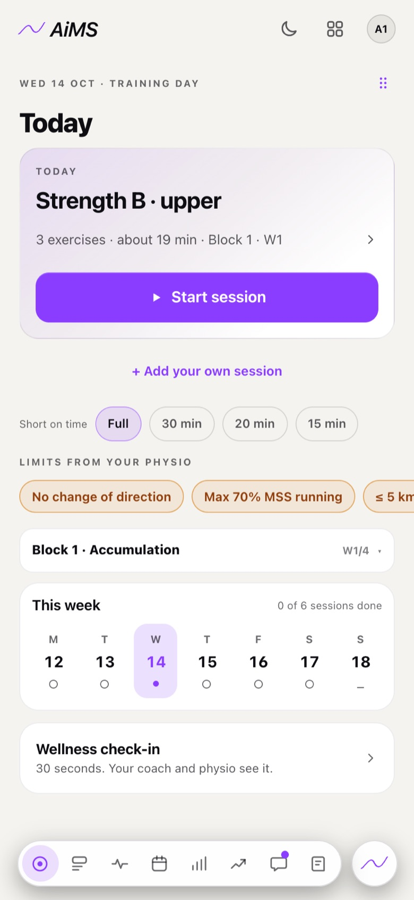
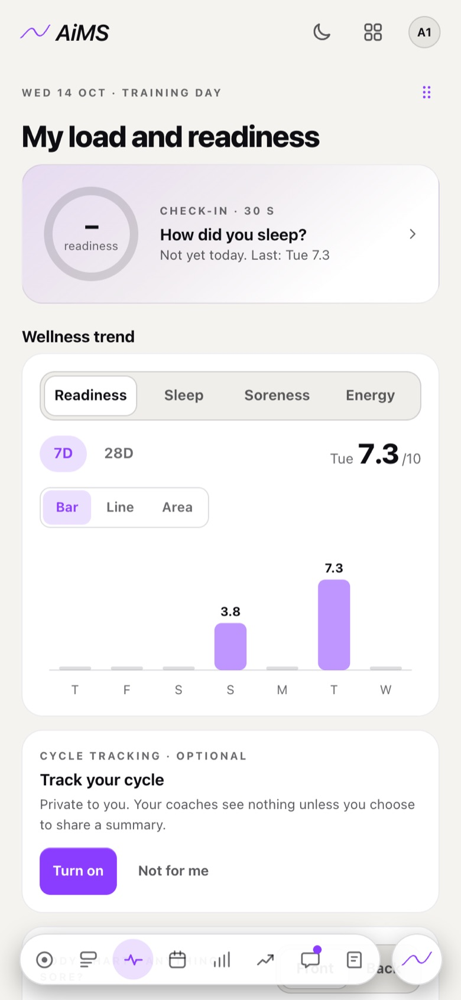
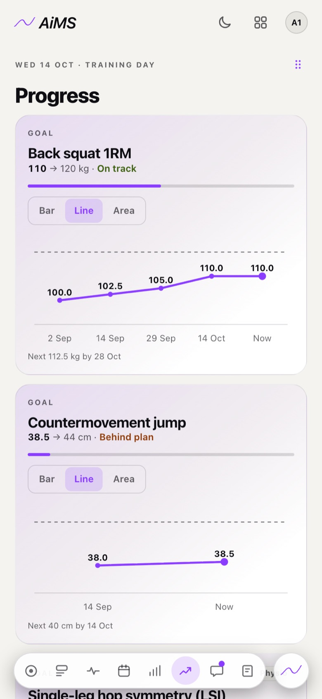

The AiMS app for athletes.
Check in, train, log each set and see your progress. Your coach’s plan and your physio’s limits, on your phone, even with no signal.
Free for athletes when your club, gym or clinic uses AiMS.

A quick check-in.
Six scores out of 10: sleep, fatigue, soreness, mood, stress and energy. If you’re sore, mark where. Your coach sees it before the session.

Today, first.
Your coach’s session is waiting when you open the app. One Start button.
Tick a set. Move on.
Check the kilos and reps, and tick it off, with a rest timer between sets. It works with no signal.
Watch it without leaving the app.
Tap ▶ next to an exercise and its demo video plays inside AiMS.
Watch your numbers climb.
Progress shows your goals, your lifts and your test results over time. Your load is flagged if it spikes.

Your coach and your physio, one message away.
Separate threads for each, and coach notes you can mark “Got it”.
What stays yours.
Your journal is private. Cycle tracking is off until you turn it on, and staff see a summary only if you share it. Your own sessions stay yours, and you can delete your account from the app.
Get AiMS on your phone.
Download it from the App Store or Google Play, or open it in your phone’s browser. Sign in with a 6-digit code.

See AiMS with your own athletes.
Book a 30-minute video call with Tim. He shows you AiMS using your programmes and your clinic’s way of working.
The founding cohort is a small group of clinics, gyms and clubs that start first, set up by Tim.